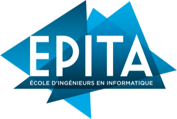

BMX
Pratique en compétition, co-fondateur d'une association sportive pour les voyages de groupe et échanges culturels.
Je recherche mon stage de fin d'études de 6 mois en Intelligence Artificielle ou en Traitement d'Image à partir de février 2027 sur Bordeaux ou Paris. Curieux, adaptable et motivé, je conçois des systèmes performants alliant rendu temps réel, vision algorithmique et architectures d'IA modernes.
Pratique en compétition, co-fondateur d'une association sportive pour les voyages de groupe et échanges culturels.
Échange universitaire à San Sebastián en 2024 et voyages de groupe organisés avec mon association de BMX.
Passionné de MotoGP et Formule 1 (télémétrie, aérodynamique et ingénierie de pointe).

5ᵉ année – Majeure IMAGE (traitement d'images, vision par ordinateur, deep learning, IA, calcul GPU) et mineure Finance de marché.
Universidad del País Vasco – Faculté d'informatique.
Lycée Descartes